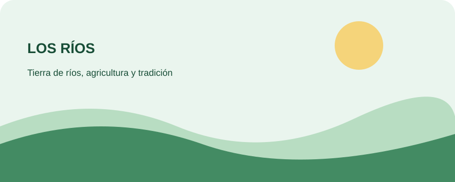

Hoteles y alojamiento
Consulta alojamientos disponibles, precios, ubicación y opiniones actualizadas en el directorio de mapas.
Buscar hoteles en Valencia ↗Cantón agrícola del norte provincial, conocido por sus cultivos de banano, cacao, palma y frutas tropicales.
Población: 51,509 habitantes · Censo 2022
Cantón agrícola del norte provincial, conocido por sus cultivos de banano, cacao, palma y frutas tropicales. Forma parte de una provincia cuya identidad está estrechamente relacionada con los ríos, la agricultura y la cultura montuvia.
Valencia y La Unión (parroquia rural; verificar denominación en el GAD).
Para la división político-administrativa vigente, consulta el GAD municipal y el INEC.
Tilapia, caldo de gallina, bolón y platos con verde.
La cocina local aprovecha productos de la zona como el plátano verde, arroz, pescado y gallina criolla.
Balnearios y riberas, parques urbanos y paisajes agrícolas.
Son espacios de interés por sus paisajes, actividades recreativas, historia o relación con la cultura local. Verifica condiciones de visita y horarios con el municipio.
Consulta alojamientos disponibles, precios, ubicación y opiniones actualizadas en el directorio de mapas.
Buscar hoteles en Valencia ↗Ubicación referencial de Valencia.
Ver mapa ↗Fecha de consulta: . La información de autoridades corresponde al directorio del período 2023–2027 y puede requerir actualización.